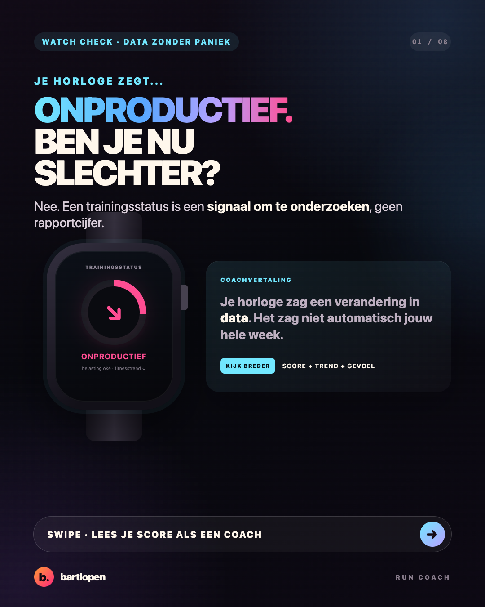
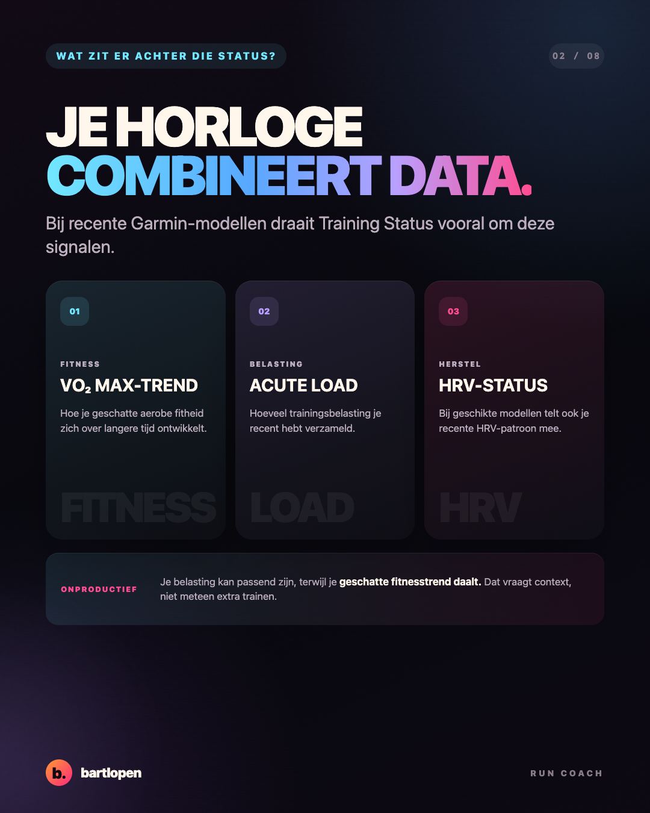
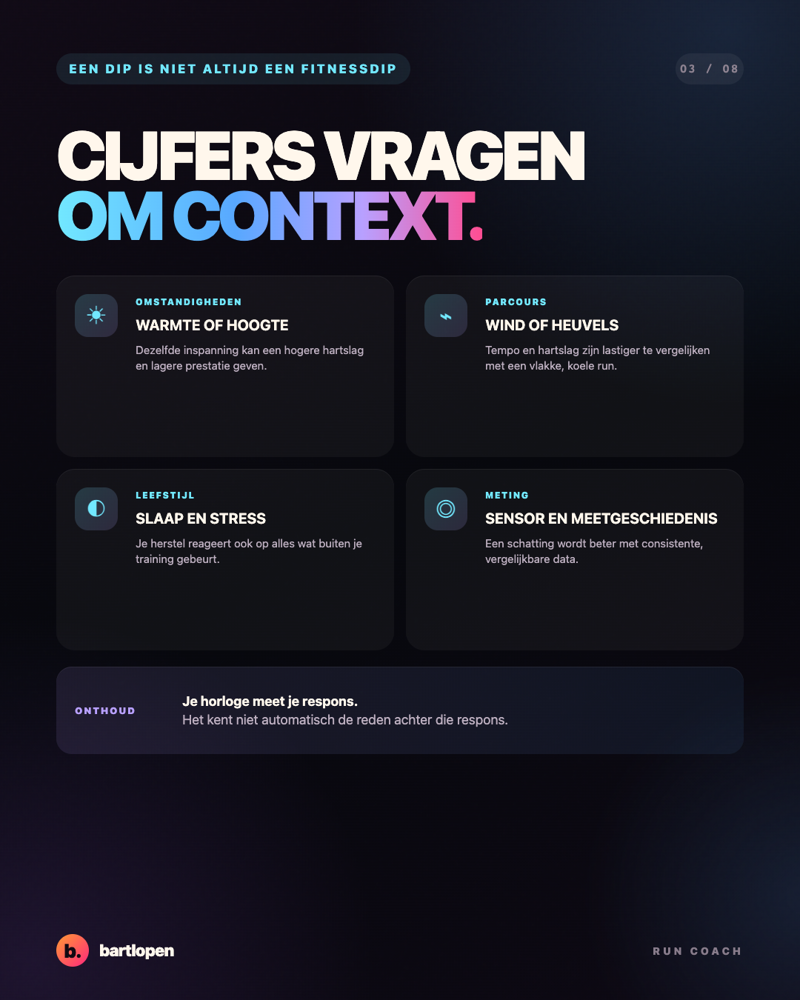
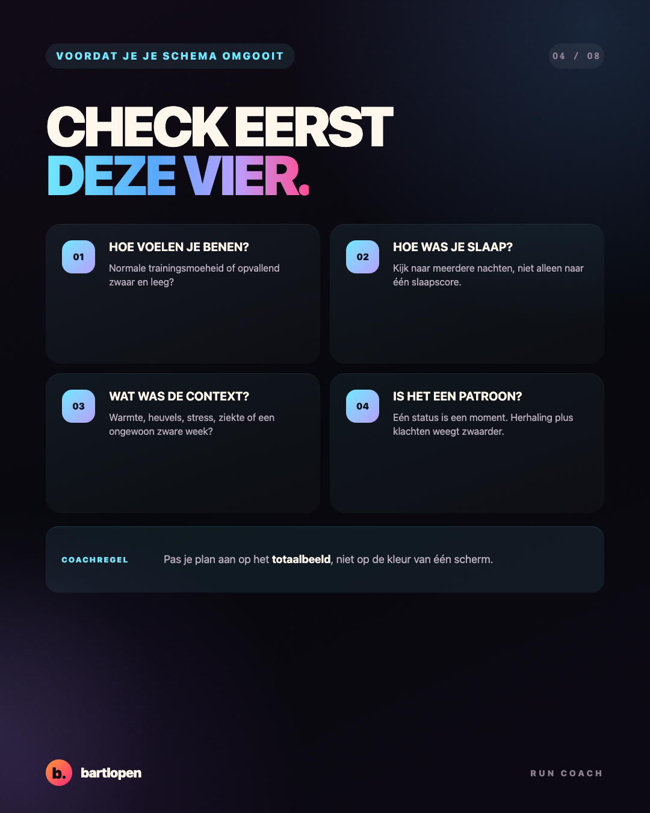
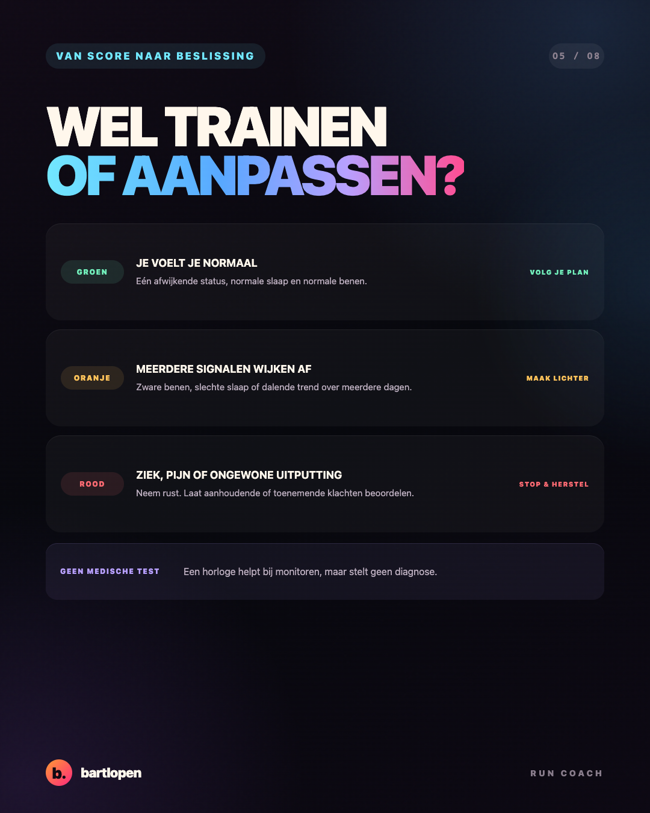
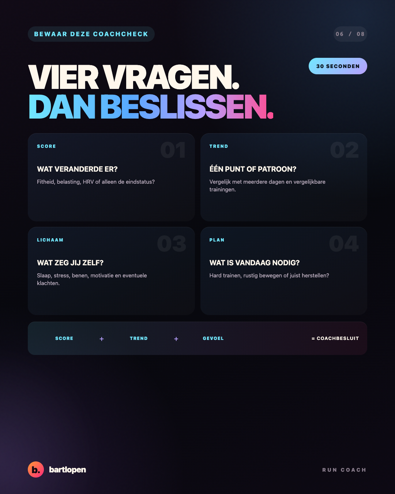
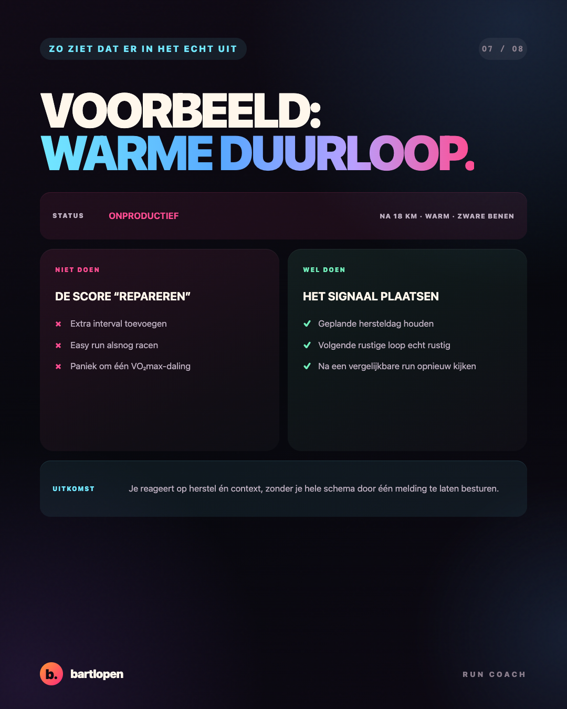
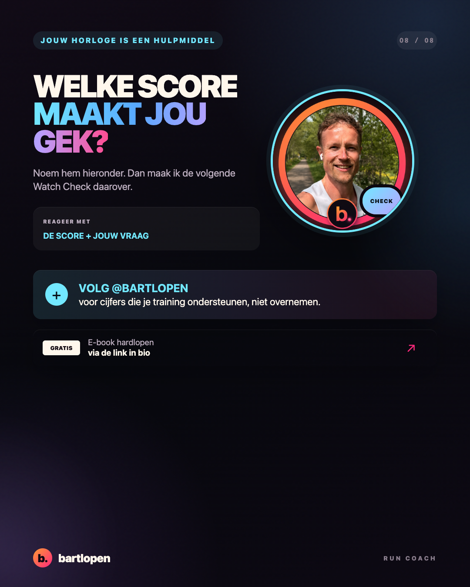

SLIDE 01 ↗Je horloge zegt
onproductief
Acht premium slides die trainingsstatus vertalen naar een bruikbare coachbeslissing. Gebouwd in 4:5-formaat voor Instagram en TikTok Photo Mode.

SLIDE 02 ↗
SLIDE 03 ↗
SLIDE 04 ↗
SLIDE 05 ↗
SLIDE 06 ↗
SLIDE 07 ↗
SLIDE 08 ↗Caption
ONPRODUCTIEF. AU. MIJN HORLOGE HEEFT GESPROKEN. ⌚️ Maar rustig: je trainingsstatus is geen rapportcijfer. Je horloge combineert onder andere je geschatte fitnesstrend, recente belasting en, bij geschikte modellen, HRV. Handig, maar het kent niet automatisch het hele verhaal achter jouw training. Kijk daarom eerst naar: 🌡️ warmte, hoogte, wind en parcours 😴 slaap en stress 🦵 hoe je benen echt voelen 📉 één losse score of een terugkerend patroon Voel je je normaal en is dit één afwijkende melding? Gooi dan niet meteen je schema om. Stapelen meerdere signalen zich op? Maak je training rustiger en kijk opnieuw naar het totaalbeeld. Welke score op jouw horloge maakt jou het meest onzeker? 👇 #hardlopen #garmin #hardlooptips #runningwatch #trainingstatus #bartlopen
Inhoud gecontroleerd aan de hand van de officiële uitleg van Garmin Training Status en het Forerunner 970-handboek. Horlogemetrics zijn schattingen en geen medische diagnose.